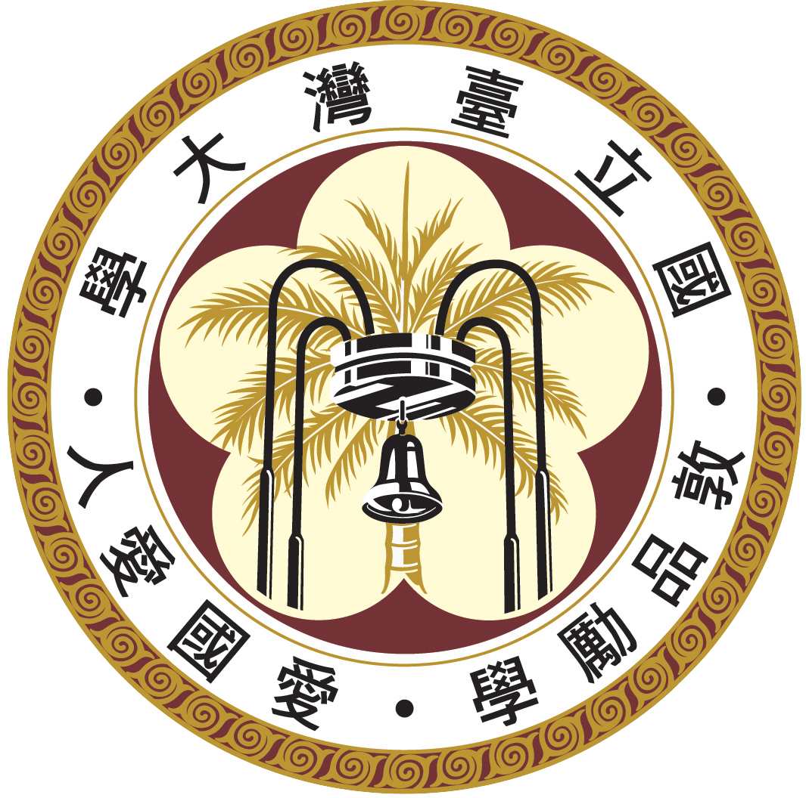

My NTU ID Creator
歡迎使用趣味台大學生證產生器！請輸入以下欄位並按下Create即可產生。本工具僅供紀念使用，並無任何效力，任意使用本人恕不負責噢！
系所：
學號：
狀態：
新發
補發 1
補發 2
補發 3
補發 4
補發 5
補發 6
補發 7
補發 8
補發 9
姓名：
生日：民國
年
月
日
照片網址：
Create
大學之教也時教
必有正業退息必
有居學不學操縵
不能安弦不學博
依不能安詩不學
雜服不能安禮不
興其藝不能樂學
故君子之於學也
藏焉修焉息焉遊
焉夫然故安其學
而親其師樂其友
而信其道是以雖
離師輔而不反也
 國立臺灣大學
學生證
National Taiwan University
系所：
學號：
姓名：
生日：民國